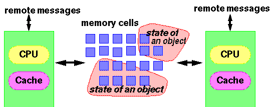

<!DOCTYPE html>
<html lang="zh-CN">
<head><meta name="generator" content="Hexo 3.8.0">

    <!--[if lt IE 9]>
        <style>body {display: none; background: none !important} </style>
        <meta http-equiv="Refresh" Content="0; url=//outdatedbrowser.com/" />
    <![endif]-->

<meta charset="utf-8">
<meta http-equiv="X-UA-Compatible" content="IE=edge, chrome=1">
<meta name="viewport" content="width=device-width, initial-scale=1, maximum-scale=1, user-scalable=no">
<meta name="format-detection" content="telephone=no">
<meta name="author" content="康兴华">


<meta name="description" content="先来看如下这个简单的Java类，该类中并没有使用任何的同步。1234567891011121314final class SetCheck &amp;#123;        private int a = 0;        private long b = 0;        void set() &amp;#123;            a = 1;            b = -1;        &amp;">
<meta name="keywords" content="笔记">
<meta property="og:type" content="article">
<meta property="og:title" content="同步与Java内存模型(一)序言">
<meta property="og:url" content="http://kxh.ink/2016/11/15/syn-jmm-pre/index.html">
<meta property="og:site_name" content="康兴华">
<meta property="og:description" content="先来看如下这个简单的Java类，该类中并没有使用任何的同步。1234567891011121314final class SetCheck &amp;#123;        private int a = 0;        private long b = 0;        void set() &amp;#123;            a = 1;            b = -1;        &amp;">
<meta property="og:locale" content="zh-CN">
<meta property="og:image" content="http://kxh.ink/2016/11/15/syn-jmm-pre/70421f3c-de06-4652-91df-3b357e15824c.gif">
<meta property="og:updated_time" content="2018-10-22T06:34:56.131Z">
<meta name="twitter:card" content="summary">
<meta name="twitter:title" content="同步与Java内存模型(一)序言">
<meta name="twitter:description" content="先来看如下这个简单的Java类，该类中并没有使用任何的同步。1234567891011121314final class SetCheck &amp;#123;        private int a = 0;        private long b = 0;        void set() &amp;#123;            a = 1;            b = -1;        &amp;">
<meta name="twitter:image" content="http://kxh.ink/2016/11/15/syn-jmm-pre/70421f3c-de06-4652-91df-3b357e15824c.gif">

<link rel="apple-touch-icon" href="/apple-touch-icon.png">


    <link rel="alternate" href="/atom.xml" title="康兴华" type="application/atom+xml">


    <link rel="shortcut icon" href="/favicon.png">


    <link href="//cdn.bootcss.com/animate.css/3.5.1/animate.min.css" rel="stylesheet">


    <link href="//cdn.bootcss.com/fancybox/2.1.5/jquery.fancybox.min.css" rel="stylesheet">


    <script src="//cdn.bootcss.com/pace/1.0.2/pace.min.js"></script>
    <link href="//cdn.bootcss.com/pace/1.0.2/themes/blue/pace-theme-minimal.css" rel="stylesheet">


<link rel="stylesheet" href="/css/style.css">


<link href="//cdn.bootcss.com/font-awesome/4.6.3/css/font-awesome.min.css" rel="stylesheet">


<title>同步与Java内存模型(一)序言 | 康兴华</title>

<script src="//cdn.bootcss.com/jquery/2.2.4/jquery.min.js"></script>
<script src="//cdn.bootcss.com/clipboard.js/1.5.10/clipboard.min.js"></script>

<script>
    var yiliaConfig = {
        fancybox: true,
        animate: true,
        isHome: false,
        isPost: true,
        isArchive: false,
        isTag: false,
        isCategory: false,
        fancybox_js: "//cdn.bootcss.com/fancybox/2.1.5/jquery.fancybox.min.js",
        scrollreveal: "//cdn.bootcss.com/scrollReveal.js/3.1.4/scrollreveal.min.js",
        search: true
    }
</script>


    <script> yiliaConfig.jquery_ui = [false]; </script>


    <script> yiliaConfig.rootUrl = "\/";</script>


</head></html>
<body>
  <div id="container">
    <div class="left-col">
    <div class="overlay"></div>
<div class="intrude-less">
    <header id="header" class="inner">
        <a href="/" class="profilepic">
            
        </a>
        <hgroup>
          <h1 class="header-author"><a href="/">康兴华</a></h1>
        </hgroup>

        

        
            <form id="search-form">
            <input type="text" id="local-search-input" name="q" placeholder="search..." class="search form-control" autocomplete="off" autocorrect="off" searchonload="true">
            <i class="fa fa-times" onclick="resetSearch()"></i>
            </form>
            <div id="local-search-result"></div>
            <p class="no-result">No results found <i class="fa fa-spinner fa-pulse"></i></p>
        


        
            <div id="switch-btn" class="switch-btn">
                <div class="icon">
                    <div class="icon-ctn">
                        <div class="icon-wrap icon-house" data-idx="0">
                            <div class="birdhouse"></div>
                            <div class="birdhouse_holes"></div>
                        </div>
                        <div class="icon-wrap icon-ribbon hide" data-idx="1">
                            <div class="ribbon"></div>
                        </div>
                        
                        <div class="icon-wrap icon-link hide" data-idx="2">
                            <div class="loopback_l"></div>
                            <div class="loopback_r"></div>
                        </div>
                        
                        
                        <div class="icon-wrap icon-me hide" data-idx="3">
                            <div class="user"></div>
                            <div class="shoulder"></div>
                        </div>
                        
                    </div>
                    
                </div>
                <div class="tips-box hide">
                    <div class="tips-arrow"></div>
                    <ul class="tips-inner">
                        <li>菜单</li>
                        <li>标签</li>
                        
                        <li>友情链接</li>
                        
                        
                        <li>关于我</li>
                        
                    </ul>
                </div>
            </div>
        

        <div id="switch-area" class="switch-area">
            <div class="switch-wrap">
                <section class="switch-part switch-part1">
                    <nav class="header-menu">
                        <ul>
                        
                            <li><a href="/">主页</a></li>
                        
                            <li><a href="/archives/">所有文章</a></li>
                        
                            <li><a href="/tags/">标签云</a></li>
                        
                            <li><a href="/about/">关于我</a></li>
                        
                        </ul>
                    </nav>
                    <nav class="header-nav">
                        <ul class="social">
                            
                                <a class="fa Email" href="mailto:kangxinghua@gmail.com" title="Email"></a>
                            
                                <a class="fa GitHub" href="https://github.com/kangxinghua" title="GitHub"></a>
                            
                                <a class="fa RSS" href="/atom.xml" title="RSS"></a>
                            
                        </ul>
                    </nav>
                </section>
                
                
                <section class="switch-part switch-part2">
                    <div class="widget tagcloud" id="js-tagcloud">
                        <ul class="tag-list"><li class="tag-list-item"><a class="tag-list-link" href="/tags/Java-并发编程实战/">Java 并发编程实战</a></li><li class="tag-list-item"><a class="tag-list-link" href="/tags/笔记/">笔记</a></li></ul>
                    </div>
                </section>
                
                
                
                <section class="switch-part switch-part3">
                    <div id="js-friends">
                    
                      <a class="main-nav-link switch-friends-link" href="https://hexo.io">Hexo</a>
                    
                      <a class="main-nav-link switch-friends-link" href="https://pages.github.com/">GitHub</a>
                    
                      <a class="main-nav-link switch-friends-link" href="http://moxfive.xyz/">MOxFIVE</a>
                    
                    </div>
                </section>
                

                
                
                <section class="switch-part switch-part4">
                
                    <div id="js-aboutme">专注于前端</div>
                </section>
                
            </div>
        </div>
    </header>                
</div>
    </div>
    <div class="mid-col">
      <nav id="mobile-nav">
      <div class="overlay">
          <div class="slider-trigger"></div>
          <h1 class="header-author js-mobile-header hide"><a href="/" title="回到主页">康兴华</a></h1>
      </div>
    <div class="intrude-less">
        <header id="header" class="inner">
            <a href="/" class="profilepic">
                
            </a>
            <hgroup>
              <h1 class="header-author"><a href="/" title="回到主页">康兴华</a></h1>
            </hgroup>
            
            <nav class="header-menu">
                <ul>
                
                    <li><a href="/">主页</a></li>
                
                    <li><a href="/archives/">所有文章</a></li>
                
                    <li><a href="/tags/">标签云</a></li>
                
                    <li><a href="/about/">关于我</a></li>
                
                <div class="clearfix"></div>
                </ul>
            </nav>
            <nav class="header-nav">
                        <ul class="social">
                            
                                <a class="fa Email" target="_blank" href="mailto:kangxinghua@gmail.com" title="Email"></a>
                            
                                <a class="fa GitHub" target="_blank" href="https://github.com/kangxinghua" title="GitHub"></a>
                            
                                <a class="fa RSS" target="_blank" href="/atom.xml" title="RSS"></a>
                            
                        </ul>
            </nav>
        </header>                
    </div>
    <link class="menu-list" tags="标签" friends="友情链接" about="关于我">
</nav>
      <div class="body-wrap"><article id="post-syn-jmm-pre" class="article article-type-post" itemscope="" itemprop="blogPost">
  
    <div class="article-meta">
      <a href="/2016/11/15/syn-jmm-pre/" class="article-date">
      <time datetime="2016-11-15T06:44:12.000Z" itemprop="datePublished">2016-11-15</time>
</a>


    </div>
  
  <div class="article-inner">
    
      <input type="hidden" class="isFancy">
    
    
      <header class="article-header">
        
  
    <h1 class="article-title" itemprop="name">
      同步与Java内存模型(一)序言
    </h1>
  

      </header>
      
      <div class="article-info article-info-post">
        

        
    <div class="article-tag tagcloud">
        <ul class="article-tag-list"><li class="article-tag-list-item"><a class="article-tag-list-link" href="/tags/笔记/">笔记</a></li></ul>
    </div>

        <div class="clearfix"></div>
      </div>
      
    
    <div class="article-entry" itemprop="articleBody">
      
          
        <p>先来看如下这个简单的Java类，该类中并没有使用任何的同步。<br><figure class="highlight java"><table><tr><td class="gutter"><pre><span class="line">1</span><br><span class="line">2</span><br><span class="line">3</span><br><span class="line">4</span><br><span class="line">5</span><br><span class="line">6</span><br><span class="line">7</span><br><span class="line">8</span><br><span class="line">9</span><br><span class="line">10</span><br><span class="line">11</span><br><span class="line">12</span><br><span class="line">13</span><br><span class="line">14</span><br></pre></td><td class="code"><pre><span class="line"><span class="keyword">final</span> <span class="class"><span class="keyword">class</span> <span class="title">SetCheck</span> </span>&#123;</span><br><span class="line">        <span class="keyword">private</span> <span class="keyword">int</span> a = <span class="number">0</span>;</span><br><span class="line">        <span class="keyword">private</span> <span class="keyword">long</span> b = <span class="number">0</span>;</span><br><span class="line"></span><br><span class="line">        <span class="function"><span class="keyword">void</span> <span class="title">set</span><span class="params">()</span> </span>&#123;</span><br><span class="line">            a = <span class="number">1</span>;</span><br><span class="line">            b = -<span class="number">1</span>;</span><br><span class="line">        &#125;</span><br><span class="line"></span><br><span class="line">        <span class="function"><span class="keyword">boolean</span> <span class="title">check</span><span class="params">()</span> </span>&#123;</span><br><span class="line">            <span class="keyword">return</span> ((b == <span class="number">0</span>) ||</span><br><span class="line">                    (b == -<span class="number">1</span> &amp;&amp; a == <span class="number">1</span>));</span><br><span class="line">        &#125;</span><br><span class="line">    &#125;</span><br></pre></td></tr></table></figure></p>
<a id="more"></a>
<p>如果是在一个串行执行的语言中，执行SetCheck类中的check方法永远不会返回false，即使编译器，运行时和计算机硬件并没有按照你所期望的逻辑来处理这段程序，该方法依然不会返回false。在程序执行过程中，下面这些你所不能预料的行为都是可能发生的：</p>
<ul>
<li>编译器可能会进行指令重排序，所以b变量的赋值操作可能先于a变量。如果是一个内联方法，编译器可能更甚一步将该方法的指令与其他语句进行重排序。</li>
<li>处理器可能会对语句所对应的机器指令进行重排序之后再执行，甚至并发地去执行。</li>
<li>内存系统（由高速缓存控制单元组成）可能会对变量所对应的内存单元的写操作指令进行重排序。重排之后的写操作可能会对其他的计算/内存操作造成覆盖。</li>
<li>编译器，处理器以及内存系统可能会让两条语句的机器指令交错。比如在32位机器上，b变量的高位字节先被写入，然后是a变量，紧接着才会是b变量的低位字节。</li>
<li>编译器，处理器以及内存系统可能会导致代表两个变量的内存单元在（如果有的话）连续的check调用（如果有的话）之后的某个时刻才更新，而以这种方式保存相应的值（如在CPU寄存器中）仍会得到预期的结果（check永远不会返回false）。  </li>
</ul>
<p>在串行执行的语言中，只要程序执行遵循类似串行的语义，如上几种行为就不会有任何的影响。在一段简单的代码块中，串行执行程序不会依赖于代码的内部执行细节，因此如上的几种行为可以随意控制代码。这样就为编译器和计算机硬件提供了基本的灵活性。基于此，在过去的数十年内很多技术（CPU的流水线操作，多级缓存，读写平衡，寄存器分配等等）应运而生，为计算机处理速度的大幅提升奠定了基础。这些操作的类似串行执行的特性可以让开发人员无须知道其内部发生了什么。对于开发人员来说，如果不创建自己的线程，那么这些行为也不会对其产生任何的影响。</p>
<p>然而这些情况在并发编程中就完全不一样了，上面的代码在并发过程中，当一个线程调用check方法的时候完全有可能另一个线程正在执行set方法，这种情况下check方法就会将上面提到的优化操作过程暴露出来。如果上述任意一个操作发生，那么check方法就有可能返回false。例如，check方法读取long类型的变量b的时候可能得到的既不是0也不是-1.而是一个被写入一半的值。另一种情况，set方法中的语句的乱序执行有可能导致check方法读取变量b的值的时候是-1，然而读取变量a时却依然是0。</p>
<p>换句话说，不仅是并发执行会导致问题，而且在一些优化操作（比如指令重排序）进行之后也会导致代码执行结果和源代码中的逻辑有所出入。由于编译器和运行时技术的日趋成熟以及多处理器的逐渐普及，这种现象就变得越来越普遍。对于那些一直从事串行编程背景的开发人员（其实，基本上所有的程序员）来说，这可能会导致令人诧异的结果，而这些结果可能从没在串行编程中出现过。这可能就是那些微妙难解的并发编程错误的根本源头吧。</p>
<p>在绝大部分的情况下，有一个很简单易行的方法来避免那些在复杂的并发程序中因代码执行优化导致的问题：使用同步。例如，如果SetCheck类中所有的方法都被声明为synchronized,那么你就可以确保那么内部处理细节都不会影响代码预期的结果了。</p>
<p>但是在有些情况下你却不能或者不想去使用同步，抑或着你需要推断别人未使用同步的代码。在这些情况下你只能依赖Java内存模型所阐述的结果语义所提供的最小保证。Java内存模型允许上面提到的所有操作，但是限制了它们在执行语义上潜在的结果，此外还提出了一些技术让程序员可以用来控制这些语义的某些方面。</p>
<p>Java内存模型是Java语言规范的一部分，主要在JLS的第17章节介绍。这里，我们只是讨论一些基本的动机，属性以及模型的程序一致性。这里对JLS第一版中所缺少的部分进行了澄清。</p>
<p>我们假设Java内存模型可以被看作在1.2.4中描述的那种标准的SMP机器的理想化模型。</p>
<p></p>
<p>在这个模型中，<strong>每一个线程都可以被看作为运行在不同的CPU上，然而即使是在多处理器上，这种情况也是很罕见的。</strong> 但是实际上，通过模型所具备的某些特性，这种CPU和线程单一映射能够通过一些合理的方法去实现。例如，因为CPU的寄存器不能被另一个CPU直接访问，这种模型必须考虑到某个线程无法得知被另一个线程操作变量的值的情况。这种情况不仅仅存在于多处理器环境上，在单核CPU环境里，因为编译器和处理器的不可预测的行为也可能导致同样的情况。 </p>
<p>Java内存模型没有具体讲述前面讨论的执行策略是由编译器，CPU，缓存控制器还是其它机制促成的。甚至没有用开发人员所熟悉的类，对象及方法来讨论。取而代之，Java内存模型中仅仅定义了线程和内存之间那种抽象的关系。众所周知，每个线程都拥有自己的工作存储单元（缓存和寄存器的抽象）来存储线程当前使用的变量的值。Java内存模型仅仅保证了代码指令与变量操作的有序性，大多数规则都只是指出什么时候变量值应该在内存和线程工作内存之间传输。这些规则主要是为了解决如下三个相互牵连的问题：</p>
<ul>
<li><strong>原子性</strong>：哪些指令必须是不可分割的。在Java内存模型中，这些规则需声明仅适用于-—实例变量和静态变量，也包括数组元素，但不包括方法中的局部变量-—的内存单元的简单读写操作。</li>
<li><strong>可见性</strong>：在哪些情况下，一个线程执行的结果对另一个线程是可见的。这里需要关心的结果有，写入的字段以及读取这个字段所看到的值。</li>
<li><strong>有序性</strong>：在什么情况下，某个线程的操作结果对其它线程来看是无序的。最主要的乱序执行问题主要表现在读写操作和赋值语句的相互执行顺序上。</li>
</ul>
<p>当正确的使用了同步，上面属性都会具有一个简单的特性：一个同步方法或者代码块中所做的修改对于使用了同一个锁的同步方法或代码块都具有原子性和可见性。同步方法或代码块之间的执行过程都会和代码指定的执行顺序保持一致。即使代码块内部指令也许是乱序执行的，也不会对使用了同步的其它线程造成任何影响。</p>
<p>当没有使用同步或者使用的不一致的时候，情况就会变得复杂。Java内存模型所提供的保障要比大多数开发人员所期望的弱，也远不及目前业界所实现的任意一款Java虚拟机。这样，开发人员就必须负起额外的义务去保证对象的一致性关系：对象间若有能被多个线程看到的某种恒定关系，所有依赖这种关系的线程就必须一直维持这种关系，而不仅仅由执行状态修改的线程来维持。  </p>
<blockquote>
<p>原文：<a href="http://gee.cs.oswego.edu/dl/cpj/jmm.html" target="_blank" rel="noopener">http://gee.cs.oswego.edu/dl/cpj/jmm.html</a><br>作者：Doug Lea 译者：萧欢  校对：丁一，方腾飞  </p>
</blockquote>

      
    </div>
    
  </div>
  
    
    <div class="copyright">
        <p><span>本文标题:</span><a href="/2016/11/15/syn-jmm-pre/">同步与Java内存模型(一)序言</a></p>
        <p><span>文章作者:</span><a href="/" title="回到主页">康兴华</a></p>
        <p><span>发布时间:</span>2016-11-15, 14:44:12</p>
        <p><span>最后更新:</span>2018-10-22, 14:34:56</p>
        <p>
            <span>原始链接:</span><a class="post-url" href="/2016/11/15/syn-jmm-pre/" title="同步与Java内存模型(一)序言">http://kxh.ink/2016/11/15/syn-jmm-pre/</a>
            <span class="copy-path" data-clipboard-text="原文: http://kxh.ink/2016/11/15/syn-jmm-pre/　　作者: 康兴华" title="点击复制文章链接"><i class="fa fa-clipboard"></i></span>
            <script> var clipboard = new Clipboard('.copy-path'); </script>
        </p>
        <p>
            <span>许可协议:</span><i class="fa fa-creative-commons"></i> <a rel="license" href="http://creativecommons.org/licenses/by-nc-sa/4.0/" title="CC BY-NC-SA 4.0 International" target="_blank">"署名-非商用-相同方式共享 4.0"</a> 转载请保留原文链接及作者。
        </p>
    </div>


    <nav id="article-nav">
        
            <div id="article-nav-newer" class="article-nav-title">
                <a href="/2016/11/15/syn-jmm-atomicity/">
                    同步和Java内存模型 (二)原子性
                </a>
            </div>
        
        
            <div id="article-nav-older" class="article-nav-title">
                <a href="/2016/11/02/Git-CentOS-Install/">
                    Git CentOS 源码安装
                </a>
            </div>
        
    </nav>

  
</article>

    <div id="toc" class="toc-article">
        <strong class="toc-title">文章目录</strong>
        
            
        
    </div>
    <style>
        .left-col .switch-btn,
        .left-col .switch-area {
            display: none;
        }
        .toc-level-3 i,
        .toc-level-3 ol {
            display: none !important;
        }
    </style>

    <input type="button" id="tocButton" value="隐藏目录" title="点击按钮隐藏或者显示文章目录">

    <script>
        yiliaConfig.toc = ["隐藏目录", "显示目录", !!"false"];
    </script>


    
<div class="share">
    
        <div class="bdsharebuttonbox">
            <a href="#" class="fa fa-twitter bds_twi" data-cmd="twi" title="分享到推特"></a>
            <a href="#" class="fa fa-weibo bds_tsina" data-cmd="tsina" title="分享到新浪微博"></a>
            <a href="#" class="fa fa-qq bds_sqq" data-cmd="sqq" title="分享给 QQ 好友"></a>
            <a href="#" class="fa fa-files-o bds_copy" data-cmd="copy" title="复制网址"></a>
            <a href="#" class="fa fa fa-envelope-o bds_mail" data-cmd="mail" title="通过邮件分享"></a>
            <a href="#" class="fa fa-weixin bds_weixin" data-cmd="weixin" title="生成文章二维码"></a>
            <a href="#" class="fa fa-share-alt bds_more" data-cmd="more"></a>
        </div>
        <script>
            window._bd_share_config={
                "common":{"bdSnsKey":{},"bdText":"同步与Java内存模型(一)序言　| 康兴华　","bdMini":"2","bdMiniList":false,"bdPic":"","bdStyle":"0","bdSize":"24"},"share":{}};with(document)0[(getElementsByTagName('head')[0]||body).appendChild(createElement('script')).src='http://bdimg.share.baidu.com/static/api/js/share.js?v=89860593.js?cdnversion='+~(-new Date()/36e5)];
        </script>
    

    
</div>


    


    <div class="scroll" id="post-nav-button">
        
            <a href="/2016/11/15/syn-jmm-atomicity/" title="上一篇: 同步和Java内存模型 (二)原子性">
                <i class="fa fa-angle-left"></i>
            </a>
        

        <a title="文章列表"><i class="fa fa-bars"></i><i class="fa fa-times"></i></a>

        
            <a href="/2016/11/02/Git-CentOS-Install/" title="下一篇: Git CentOS 源码安装">
                <i class="fa fa-angle-right"></i>
            </a>
        
    </div>

    <ul class="post-list"><li class="post-list-item"><a class="post-list-link" href="/2018/11/12/spring-cloud-principle/">Spring Cloud 使用概述</a></li><li class="post-list-item"><a class="post-list-link" href="/2018/11/08/why-is-redis/">为什么分布式一定要有redis?</a></li><li class="post-list-item"><a class="post-list-link" href="/2018/11/02/mysql-transaction/README/">mysql-transaction/README</a></li><li class="post-list-item"><a class="post-list-link" href="/2018/11/02/mysql-transaction/">MySQL 四种事务隔离级的说明</a></li><li class="post-list-item"><a class="post-list-link" href="/2018/11/01/how-to-calculate-threadpool-size/README/">how-to-calculate-threadpool-size/README</a></li><li class="post-list-item"><a class="post-list-link" href="/2018/10/31/how-to-calculate-threadpool-size/">如何合理地估算线程池大小？</a></li><li class="post-list-item"><a class="post-list-link" href="/2018/09/19/HashMap-System-Learning/">深入理解HashMap</a></li><li class="post-list-item"><a class="post-list-link" href="/2018/06/24/Lock-Condition/">显示锁（Lock）及Condition的学习与使用</a></li><li class="post-list-item"><a class="post-list-link" href="/2018/06/21/Callable-Future-FutureTask/">Callable和Future、FutureTask的使用</a></li><li class="post-list-item"><a class="post-list-link" href="/2018/05/04/ThreadPoolPrinciple/">从使用到原理学习Java线程池</a></li><li class="post-list-item"><a class="post-list-link" href="/2017/02/16/Daemon-Thread/">守护线程</a></li><li class="post-list-item"><a class="post-list-link" href="/2017/02/15/Pass-By-Value/">Java中的参数传递——值传递、引用传递</a></li><li class="post-list-item"><a class="post-list-link" href="/2017/01/13/happen-before/">Java 内存模型</a></li><li class="post-list-item"><a class="post-list-link" href="/2017/01/06/summary-one/">第一部分总结</a></li><li class="post-list-item"><a class="post-list-link" href="/2017/01/05/synchronization-tool-class/">同步工具类</a></li><li class="post-list-item"><a class="post-list-link" href="/2016/12/22/DuiXiangGongXiang/">对象的共享</a></li><li class="post-list-item"><a class="post-list-link" href="/2016/12/06/BingFaJianShi/">并发简史</a></li><li class="post-list-item"><a class="post-list-link" href="/2016/11/15/syn-jmm-visibility/">同步和Java内存模型 (三)可见性</a></li><li class="post-list-item"><a class="post-list-link" href="/2016/11/15/syn-jmm-atomicity/">同步和Java内存模型 (二)原子性</a></li><li class="post-list-item"><a class="post-list-link" href="/2016/11/15/syn-jmm-pre/">同步与Java内存模型(一)序言</a></li><li class="post-list-item"><a class="post-list-link" href="/2016/11/02/Git-CentOS-Install/">Git CentOS 源码安装</a></li><li class="post-list-item"><a class="post-list-link" href="/2016/10/27/ACID-CAP-BASE/">从ACID到CAP到BASE</a></li><li class="post-list-item"><a class="post-list-link" href="/2016/10/27/distributed-tx-evolution/">分布式事务</a></li><li class="post-list-item"><a class="post-list-link" href="/2016/10/27/Idempotent/">幂等性</a></li><li class="post-list-item"><a class="post-list-link" href="/2016/10/26/Consistent-Hashing/">一致性哈希算法的理解与实践(Java)</a></li><li class="post-list-item"><a class="post-list-link" href="/2016/10/01/YanYiMam-XinYiShan/">言宜慢 心宜善</a></li></ul>


    <script>
        
    </script>
</div>
      <footer id="footer">
    <div class="outer">
        <div id="footer-info">
            <div class="footer-left">
                <i class="fa fa-copyright"></i> 
                2016-2018 康兴华
            </div>
            <div class="footer-right">
                <a href="http://hexo.io/" target="_blank" title="快速、简洁且高效的博客框架">Hexo</a>  Theme <a href="https://github.com/MOxFIVE/hexo-theme-yelee" target="_blank" title="简而不减 Hexo 双栏博客主题  v3.5">Yelee</a> by MOxFIVE <i class="fa fa-heart animated infinite pulse"></i>
            </div>
        </div>
        
            <div class="visit">
                
                    <span id="busuanzi_container_site_pv" style="display:none">
                        <span id="site-visit" title="本站到访数"><i class="fa fa-user" aria-hidden="true"></i><span id="busuanzi_value_site_uv"></span>
                        </span>
                    </span>
                
                
                    <span>| </span>
                
                
                    <span id="busuanzi_container_page_pv" style="display:none">
                        <span id="page-visit" title="本页阅读量"><i class="fa fa-eye animated infinite pulse" aria-hidden="true"></i><span id="busuanzi_value_page_pv"></span>
                        </span>
                    </span>
                
            </div>
        
    </div>
</footer>
    </div>
    
<script data-main="/js/main.js" src="//cdn.bootcss.com/require.js/2.2.0/require.min.js"></script>

    <script>
        $(document).ready(function() {
            var iPad = window.navigator.userAgent.indexOf('iPad');
            if (iPad > -1 || $(".left-col").css("display") === "none") {
                var bgColorList = ["#9db3f4", "#414141", "#e5a859", "#f5dfc6", "#c084a0", "#847e72", "#cd8390", "#996731"];
                var bgColor = Math.ceil(Math.random() * (bgColorList.length - 1));
                $("body").css({"background-color": bgColorList[bgColor], "background-size": "cover"});
            }
            else {
                var backgroundnum = 5;
                var backgroundimg = "url(/background/bg-x.jpg)".replace(/x/gi, Math.ceil(Math.random() * backgroundnum));
                $("body").css({"background": backgroundimg, "background-attachment": "fixed", "background-size": "cover"});
            }
        })
    </script>


<div class="scroll" id="scroll">
    <a href="#" title="返回顶部"><i class="fa fa-arrow-up"></i></a>
    <a href="#comments" onclick="load$hide();" title="查看评论"><i class="fa fa-comments-o"></i></a>
    <a href="#footer" title="转到底部"><i class="fa fa-arrow-down"></i></a>
</div>
<script>
    // Open in New Window
    
        var oOpenInNew = {
            
            
            
            
            
            
             archives: ".archive-article-title", 
             miniArchives: "a.post-list-link", 
            
             friends: "#js-friends a", 
             socail: ".social a" 
        }
        for (var x in oOpenInNew) {
            $(oOpenInNew[x]).attr("target", "_blank");
        }
    
</script>

<script async src="https://dn-lbstatics.qbox.me/busuanzi/2.3/busuanzi.pure.mini.js">
</script>
  </div>
</body>
</html>